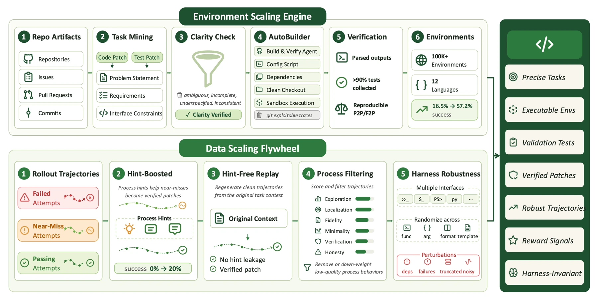
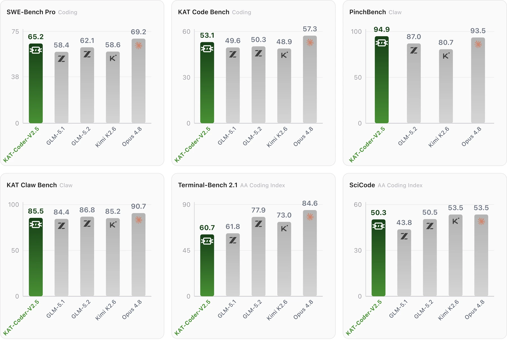

Software engineering agents face incomplete task specifications, unstable execution environments and delayed feedback. Better training requires reproducible tasks and rewards that remain meaningful over long tool-use trajectories.
软件工程智能体面临任务描述不完整、执行环境不稳定、反馈延迟等问题。有效训练需要可复现的任务，以及在长程工具调用中仍有意义的奖励。
The report treats environment construction as part of model development. A training task only becomes useful when an agent can execute it and receive feedback that actually reflects success.
报告把环境构建纳入模型研发：只有智能体能够执行任务，并获得真实反映成功与否的反馈，任务才会成为有效训练材料。
Building environments that can teach构建能够提供学习信号的环境
AutoBuilder reconstructs repository-level tasks, while KwaiClawEnv supplies multi-tool workflows. Harness randomization and an asymmetric actor–critic PPO system improve the training process. Multi-teacher on-policy distillation then combines five specialist models into one student.
AutoBuilder 重建代码仓库级任务，KwaiClawEnv 提供多工具工作流。评测框架随机化和非对称 actor–critic PPO 改善训练过程，再通过多教师在线策略蒸馏将五个领域专家融合到单一模型。
A repository task is useful for reinforcement learning only if its environment can be reconstructed and its success can be checked. AutoBuilder and the surrounding data pipeline address that prerequisite. Specialist models can then learn different behaviors from suitable tasks before distillation aligns their outputs within one student. This places data construction, reliable execution and capability fusion in one training system rather than treating them as independent support work.
仓库任务只有在环境可重建、成功可验证时，才适合强化学习。AutoBuilder 及配套数据流程首先解决这一前提。专家模型再从相应任务学习不同能力，最终由蒸馏将行为整合到一个学生模型。数据构建、可靠执行与能力融合因此构成同一个训练系统，而非彼此独立的辅助工作。
{kind=link}

Evaluating a profile of coding capabilities评测不同维度的编程能力
The report evaluates several distinct capabilities rather than presenting coding as a single score. Repository tasks, long-horizon tool use, terminal tasks and scientific programming expose different strengths. Training also randomizes harness behavior to reduce overfitting to one execution interface. The comparison table should therefore be read as a capability profile, with each benchmark’s environment and scoring protocol kept separate.
报告将仓库任务、长程工具使用、终端任务和科学编程分别评测，而不是用一个分数代表全部编程能力。训练中还随机化框架行为，以减少对单一执行接口的过拟合。因此，对比表更适合视为能力分布，各基准的环境与评分协议应分别理解。
Strong results, with an uneven profile有优势也有差异的能力表现
Table 4 reports 65.2 on SWE-bench Pro versus 69.2 for Opus 4.8 and 62.1 for GLM 5.2. KAT scores 94.9 on PinchBench average, but trails several peers on Terminal-Bench 2.1. The results indicate a strong repository-coding and tool-use profile, rather than a lead on every benchmark.
表 4 中 KAT 的 SWE-bench Pro 为 65.2，Opus 4.8 为 69.2，GLM 5.2 为 62.1。KAT 的 PinchBench 平均分为 94.9，但在 Terminal-Bench 2.1 上落后于若干对比模型，体现了仓库编程与工具使用方面的优势，而非所有基准全面领先。
{kind=link}

What the training system makes possible训练系统创造了什么条件
The central engineering idea is that environments and feedback quality can be as important as model size. Reconstructing a reproducible task, preserving useful trajectories and combining specialist behavior all shape what reinforcement learning can learn. Strong tool-use results are encouraging, while the uneven benchmark profile also identifies where a specialized training recipe leaves room for broader capability.
核心工程思路是，环境与反馈质量可能与模型规模同样重要。可复现任务、有价值的轨迹和专家行为融合，共同决定强化学习能够学到什么。工具使用结果体现了该路线的价值，而不同基准上的差异也指出了专门训练方案仍需拓展的能力范围。
Data & evaluation setup / 数据与评测条件
| Model | Score |
|---|---|
| Opus 4.8 | 69.2 |
| KAT-Coder V2.5 | 65.2 |
| GLM 5.2 | 62.1 |
| Kimi K2.6 | 58.6 |
| GLM 5.1 | 58.4 |
SWE-bench Pro scores from Table 4 of the V2.5 technical report (v1), shown for every model in that table. Evaluation settings differ from the other cards; scores should not be compared across cards.来自 V2.5 技术报告 v1 表 4，展示表中全部模型的 SWE-bench Pro 分数。各卡片评测设置不同，分数不宜跨卡片直接比较。
Technical report · Table 4 ↗Paper & authors论文与作者
Cite this work
@misc{huang2026katcoderv25technicalreport,
title = {KAT-Coder-V2.5 Technical Report},
author = {Bo Huang
and Fengxiang Li
and Hao Xu
and Haoyang Huang
and Hongyi Fu
and Jinhua Hao
and Kun Yuan
and Minglei Zhang
and Pengcheng Xu
and Shiyang Liu
and Wenhao Zhuang
and Yuze Shi
and Zongxian Feng
and Chao Wang
and Cheng He
and Chongling Rao
and Deyu Cao
and Fan Yang
and Gang Xiong
and Haochen Liu
and Jiabao Li
and Jian Liang
and Jinghui Jia
and Jingwen Chang
and Jun Du
and Junyu Shi
and Min Li
and Mingqi Wu
and Qiang Gao
and Shangpeng Yan
and Shaotong Qi
and Shu Xu
and Shuo Zhou
and Tiankuo Xu
and Tong Zheng
and Weilun Zhao
and Xiancheng Meng
and Xianda Sun
and Xiaoyu Jiang
and Xunhao Jia
and Yao Xia
and Yimeng Xu
and Yinghan Cui
and Yingpeng Chen
and Yiwen Ning
and Yong Wang
and Yuxuan Sun
and Zhongsheng Liu
and Ming Sun
and Cheng Luo
and Chen Yang
and Han Li
and Kun Gai},
year = {2026},
eprint = {2607.05471},
archivePrefix = {arXiv},
primaryClass = {cs.SE},
url = {https://arxiv.org/abs/2607.05471}
}